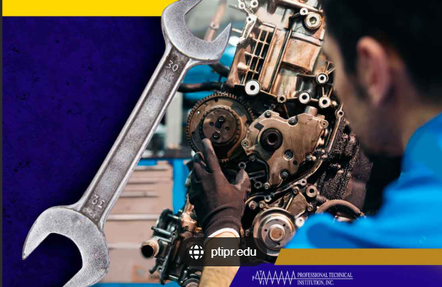
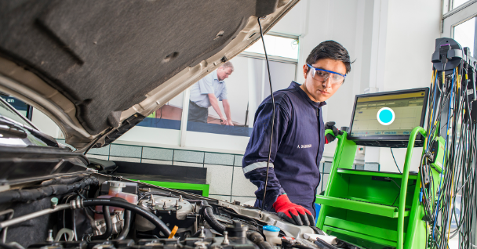
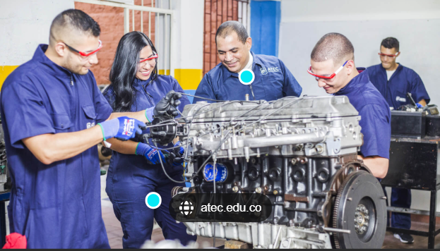
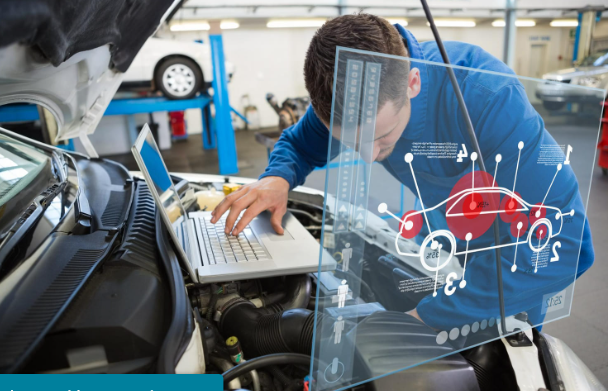
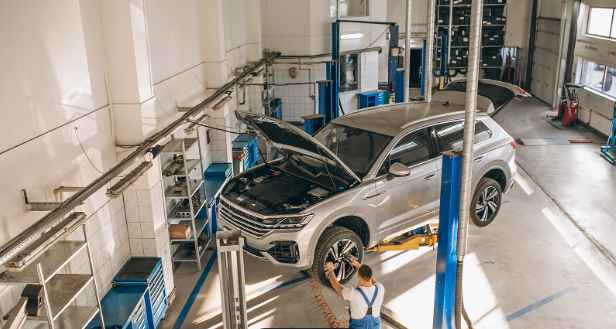
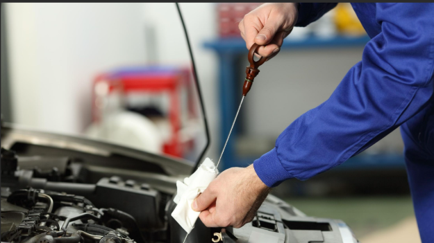
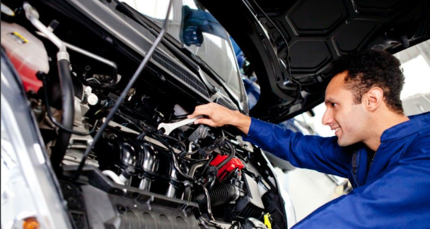

La mecánica automotriz es la disciplina encargada del mantenimiento, reparación y optimización de los vehículos.
La mecánica automotriz es la rama de la ingeniería y la tecnología que se encarga del estudio, mantenimiento, reparación y optimización de los vehículos motorizados. Su importancia radica en garantizar la seguridad, eficiencia y rendimiento de los automóviles, evitando fallos mecánicos y mejorando la experiencia de conducción.
Horario de Atención
Lunes a Viernes: 8:00 AM - 6:00 PM
Sábado: 9:00 AM - 2:00 PM
Domingo: Cerrado
correo de atencion:luis.cabrera.aguilar232007@gmail.com
numero de antencion a quilientes :2454507464
Contáctanos
Áreas Principales
Motor: Requiere mantenimiento regular.

Transmisión: Transfiere potencia a las ruedas.

Sistema Eléctrico: Batería, alternador y más.

Sistema de Frenos:Es fundamental para la seguridad del vehículo.

Trabajos Realizados



Consejos de Mantenimiento
Revisar niveles de aceite y líquidos.
Verificar presión y desgaste de neumáticos.
Inspeccionar el sistema de frenos regularmente.
Revisar el sistema de refrigeración y niveles de anticongelante.
Cambiar el filtro de aire y bujías periódicamente.
Herramientas Básicas
Llave inglesa
Destornillador
Martillo
Juego de llaves de vaso
Manómetro para medir la presión de neumáticos
HERRAMIENTAS DE MEDICIÓN Y DIAGNÓSTICO
Multímetro
Lámpara de prueba
Calibrador o vernier.
Manómetro
Tacómetro
Escáner automotriz
Preguntas Frecuentes
¿Cuándo cambiar el aceite del motor?
Se recomienda cada 5,000 - 7,500 km o según el manual del fabricante.
¿Cómo saber si los frenos necesitan cambio?
Si escuchas chirridos o sientes vibraciones al frenar.
Recursos Adicionales
Si deseas aprender más sobre mecánica automotriz, consulta los siguientes enlaces: